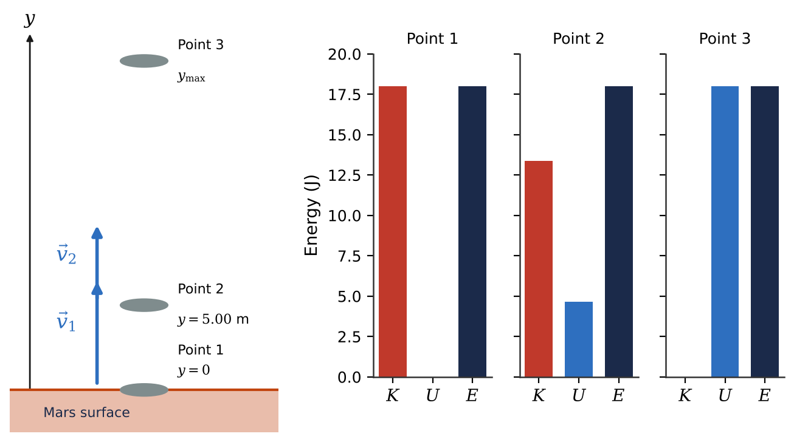
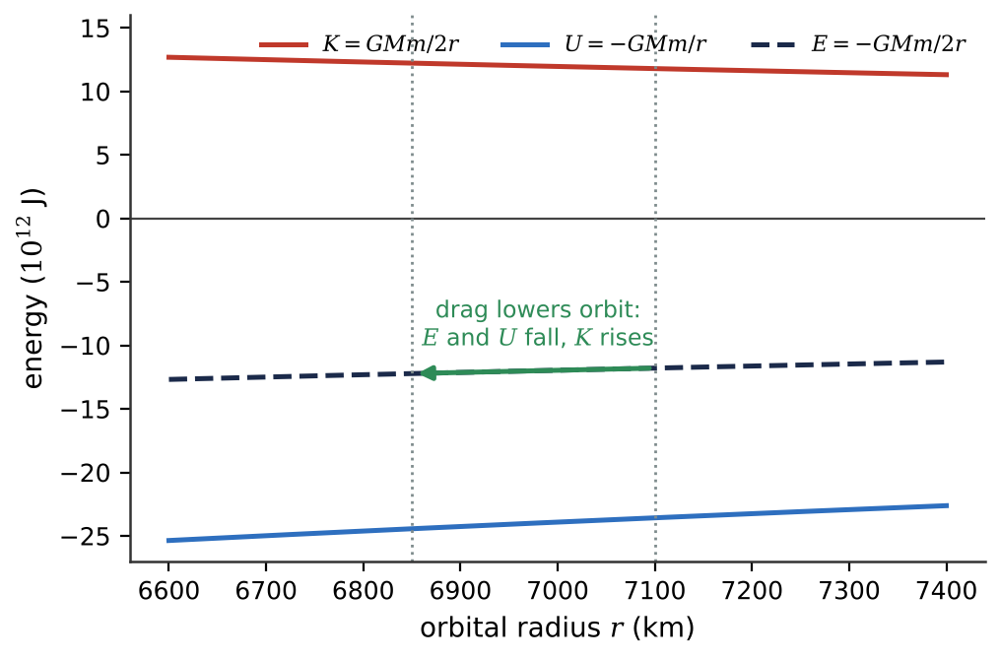
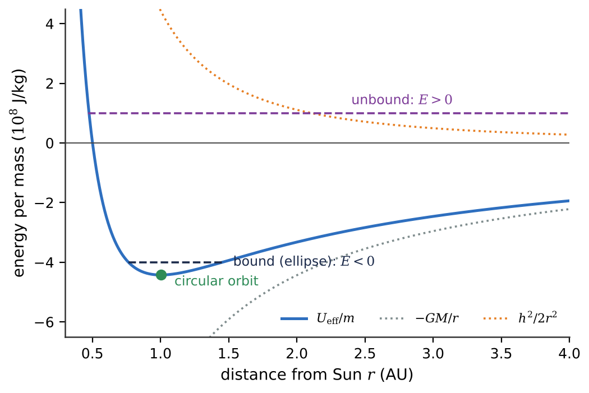

🎢What you will learn
By the end of this module, you can:
- Use gravitational and elastic potential energy with conservation of mechanical energy to find speeds, heights and compressions.
- Include the work of nonconservative forces (friction, drag, thrust) and account for the internal energy they produce.
- Distinguish conservative from nonconservative forces and explain why drag makes an orbiting satellite speed up.
- Find a force from a potential energy function using \(F_x = -dU/dx\) or the gradient.
- Read an energy diagram to find turning points, equilibrium points and their stability, including Lagrange points and bound or unbound orbits.
7.1Gravitational Potential Energy
A rock tossed upward on Mars slows, stops and falls back, regaining its speed. Its kinetic energy was stored in the gravitational interaction between rock and planet. Near a surface, where \(g\) is constant, gravity does work \(W_\text{grav} = mgy_1 - mgy_2\) as a body moves from height \(y_1\) to \(y_2\); only the change in height matters. This motivates the gravitational potential energy \(U_\text{grav} = mgy\), so that \(W_\text{grav} = -\Delta U_\text{grav}\). The zero of \(y\) can be chosen anywhere, since only differences matter.
Combining this with the work-energy theorem: if only gravity does work, the total mechanical energy \(E = K + U_\text{grav}\) is conserved. Kinetic and potential energy trade places while \(E\) stays fixed. The path shape does not matter: a rock thrown at an angle or a capsule sliding down a curved, frictionless chute obey the same equation, because a frictionless normal force is perpendicular to the motion and does no work.
If other forces (rocket thrust, friction, drag, tension) also do work \(W_\text{other}\), they change the mechanical energy: positive \(W_\text{other}\) adds energy, negative removes it.
Far from a planet, \(g\) is not constant. The general form, derived in Chapter 13, is \(U = -GMm/r\), with zero at \(r \to \infty\); close to the surface it reduces to \(mgy\) plus a constant.

7.2Elastic Potential Energy
A compressed spring can launch whatever rests against it. CubeSat deployers, spring-loaded antenna hinges and lander shock absorbers all store energy by deforming. For an ideal spring obeying \(F_x = -kx\), the work done by the spring is \(W_\text{el} = \tfrac12 kx_1^2 - \tfrac12 kx_2^2\), which has the same "initial minus final" form as gravity. So we define the elastic potential energy \(U_\text{el} = \tfrac12 kx^2\), with \(x\) measured from the relaxed length (no freedom of reference here). Because \(x\) is squared, both stretched and compressed springs store positive energy.
With gravity and a spring together, add the potential energies: \(U = U_\text{grav} + U_\text{el}\). The general energy relation becomes \(K_1 + U_1 + W_\text{other} = K_2 + U_2\), and if \(W_\text{other} = 0\), \(E = K + U_\text{grav} + U_\text{el}\) is conserved.
A graph of \(U_\text{el}\) is a parabola. For an oscillating body, the total energy \(E\) is a horizontal line; the gap between line and parabola is \(K\), and where they meet the body stops and turns around, at \(x = \pm A\) (the amplitude).
Because the spring force varies with \(x\), the acceleration is not constant and the constant-acceleration formulas fail. Energy methods avoid this difficulty entirely, which makes energy the natural language for springs. When the unknown compression appears in both \(U_\text{grav}\) and \(U_\text{el}\), expect a quadratic equation.
7.3Conservative and Nonconservative Forces
A force is conservative if its work can be written as \(U_1 - U_2\); equivalently, its work is reversible, independent of path, and zero around any closed path. Gravity and the ideal spring force are conservative. Kinetic friction is not: it always opposes motion, so dragging a lunar sample box along a longer path does more negative work. Forces like friction and drag that turn mechanical energy into heat are called dissipative. Not every nonconservative force removes energy: rocket thrust adds it.
The "lost" mechanical energy becomes internal energy: the surfaces warm up, with \(\Delta U_\text{int} = -W_\text{other}\). This gives the law of conservation of energy, \(\Delta K + \Delta U + \Delta U_\text{int} = 0\). No exception has ever been found; apparent violations have led to new physics, such as the neutrino and the gravitational waves that drain energy from the Hulse-Taylor binary pulsar.
The drag paradox. For a circular orbit of radius \(r\), \(K = GMm/2r\) and \(U = -GMm/r\), so \(E = -GMm/2r\), with \(K = -E\) and \(U = 2E\). When drag lowers \(E\) by \(|\Delta E|\), the orbit shrinks, \(U\) drops by \(2|\Delta E|\) and \(K\) rises by \(|\Delta E|\): the satellite speeds up as it sinks. This is why the ISS needs regular reboosts, and why decay accelerates as satellites sink into denser air, especially near solar maximum.

7.4Force and Potential Energy
We can also go from potential energy back to force. For a small displacement \(\Delta x\), a conservative force does work \(F_x\Delta x = -\Delta U\), so in the limit \(F_x = -dU/dx\): the force is the negative slope of the potential energy curve. Checks: \(U = \tfrac12 kx^2\) gives \(F_x = -kx\), and \(U = mgy\) gives \(F_y = -mg\).
The minus sign means a conservative force always pushes a body toward lower potential energy, like a ball rolling downhill on a landscape shaped like \(U\). Where the curve is flat, the force is zero. For example, a body on the axis of a ring of mass \(M\) and radius \(a\) has \(U = -GMm/\sqrt{x^2+a^2}\); the force points back toward the ring's center, is zero at the center, and is strongest at \(x = \pm a/\sqrt2\).
In three dimensions, use partial derivatives (holding the other coordinates fixed): \(\vec{F} = -\nabla U\), where the gradient \(\nabla U\) points in the direction of steepest increase of \(U\). So the force points in the direction of steepest descent. Surfaces of constant \(U\) are equipotentials; the force is always perpendicular to them. Around a spherical planet they are concentric spheres, and Earth's ocean surface is nearly an equipotential, the geoid, mapped by missions such as GRACE. Friction cannot be written as a gradient, because its direction depends on velocity.
7.5Energy Diagrams
A graph of \(U(x)\) tells you where a body can go without solving any equations of motion. The total energy \(E\) is a horizontal line, and at each position \(K = E - U(x)\). Since \(K \ge 0\), the body is confined to regions where \(U \le E\). Where the line meets the curve are turning points, where the body momentarily stops.
- Where \(dU/dx = 0\) the force vanishes: an equilibrium point.
- At a minimum (\(d^2U/dx^2 > 0\)) the equilibrium is stable: a nudge produces a restoring force. Near any minimum \(U\) looks like a parabola, so small oscillations are everywhere in nature.
- At a maximum (\(d^2U/dx^2 < 0\)) it is unstable: a nudge grows.
Orbits. For a body orbiting the Sun with specific angular momentum \(h = rv_\perp\), the radial motion behaves as if in an effective potential \(U_\text{eff}/m = -GM/r + h^2/2r^2\). At the bottom of this well the orbit is circular; with higher but negative \(E\), the body oscillates between perihelion and aphelion (an ellipse, bound); with \(E \ge 0\) it escapes on an unbound path, as the interstellar visitors ʻOumuamua and Borisov did.
Lagrange points. In a frame rotating with a planet, the effective potential along the Sun-planet line has maxima at \(L_1\), \(L_2\) and \(L_3\). These are unstable equilibria, so spacecraft such as SOHO (near \(L_1\)) and JWST (near \(L_2\)), about 1.5 million km from Earth, fly halo orbits with regular station-keeping burns.

★Key takeaways
- Potential energy is energy stored in an interaction: \(U_\text{grav} = mgy\) near a surface and \(U_\text{el} = \tfrac12 kx^2\) for an ideal spring.
- If only conservative forces do work, mechanical energy \(E = K + U\) is conserved, whatever the shape of the path; otherwise \(K_1 + U_1 + W_\text{other} = K_2 + U_2\).
- Nonconservative forces such as friction and drag convert mechanical energy into internal energy, but total energy is always conserved: \(\Delta K + \Delta U + \Delta U_\text{int} = 0\).
- For a circular orbit \(E = -GMm/2r\); drag lowers \(E\), shrinks the orbit and, paradoxically, increases the satellite's speed.
- A conservative force is the negative slope (gradient) of its potential energy, \(\vec{F} = -\nabla U\), and always points toward lower \(U\).
- Energy diagrams reveal turning points and equilibria: minima are stable, maxima (such as the Lagrange points \(L_1\), \(L_2\), \(L_3\)) are unstable; negative orbital energy means a bound orbit.
⟡Worked examples
Each example follows the book's method: Identify and set up, Execute, Evaluate.
A robotic sample handler on Mars (\(g = 3.71\ \text{m/s}^2\)) releases a 2.00 kg sample capsule from rest at the top of a chute shaped like a quarter circle of radius \(R = 3.00\) m. (a) If the chute is frictionless, how fast is the capsule moving at the bottom? (b) What normal force does the chute exert on it at the bottom? (c) Tests show the capsule actually arrives at 4.20 m/s. How much work did friction do?
Show solution (try it first)
Identify and set up: The normal force is always perpendicular to the path, so in (a) only gravity does work and mechanical energy is conserved even though the path is curved. Take \(y = 0\) at the bottom: \(y_1 = R\), \(v_1 = 0\), \(y_2 = 0\). Part (b) uses Newton's second law for circular motion at the bottom; part (c) uses \(K_1 + U_1 + W_\text{fric} = K_2 + U_2\).
Execute: (a) \(mgR = \tfrac12 mv_2^2\), so \[v_2 = \sqrt{2gR} = \sqrt{2(3.71\ \text{m/s}^2)(3.00\ \text{m})} = 4.72\ \text{m/s}\]
(b) At the bottom, \(n - mg = mv_2^2/R = m(2gR)/R = 2mg\), so \(n = 3mg = 3(2.00\ \text{kg})(3.71\ \text{m/s}^2) = 22.3\ \text{N}\).
(c) \(U_1 = mgR = 22.3\) J and \(K_2 = \tfrac12(2.00\ \text{kg})(4.20\ \text{m/s})^2 = 17.6\) J, so \(W_\text{fric} = K_2 - U_1 = -4.6\ \text{J}\).
Evaluate: The frictionless speed depends only on the 3.00 m drop, not on the mass or the chute's shape. The normal force at the bottom is three times the Martian weight for any radius. Friction does negative work, removing about 21% of the initial potential energy.
A 1200 kg robotic lander cuts its engine while hovering 1.50 m above the lunar surface (\(g = 1.62\ \text{m/s}^2\)) and falls freely onto its landing legs. Model the legs as a single ideal spring with \(k = 5.00\times10^4\) N/m that touches the ground when uncompressed. Find (a) the speed at first contact and (b) the maximum compression of the legs. (c) Compare the maximum leg force with the lander's lunar weight.
Show solution (try it first)
Identify and set up: Gravity works throughout; the spring works only after contact. The Moon has no air, so \(W_\text{other} = 0\). Measure \(y\) from the point of first contact: \(y_1 = 1.50\) m at cutoff, \(y_2 = 0\) at contact, \(y_3 = -d\) at maximum compression, where the lander is momentarily at rest.
Execute: (a) \(mgy_1 = \tfrac12 mv_2^2\), so \(v_2 = \sqrt{2(1.62\ \text{m/s}^2)(1.50\ \text{m})} = 2.20\ \text{m/s}\).
(b) From point 1 to point 3 both kinetic energies are zero: \(mgy_1 = mg(-d) + \tfrac12 kd^2\), i.e. \(\tfrac12 kd^2 - mgd - mgy_1 = 0\). With \(mg = 1944\) N, the positive root is \[d = \frac{mg + \sqrt{(mg)^2 + 2kmgy_1}}{k} = 0.383\ \text{m}\]
(c) \(kd = (5.00\times10^4\ \text{N/m})(0.383\ \text{m}) = 1.91\times10^4\ \text{N}\), so \(kd/mg = 9.84\).
Evaluate: Check: \(\tfrac12 kd^2 = 3.66\times10^3\) J equals the drop in gravitational potential energy \(mg(y_1 + d)\). The legs briefly push with almost ten times the lunar weight; an ideal spring would then bounce the lander back up, which is why real legs use energy-absorbing crush cores.
The ISS has a mass of about \(4.20\times10^5\) kg. Over one week without a reboost, its nearly circular orbit decays from 420 km to 418 km altitude. Take \(R_\oplus = 6.371\times10^6\) m and \(GM_E = 3.986\times10^{14}\ \text{m}^3/\text{s}^2\). Find (a) the change in total mechanical energy, (b) the changes in kinetic and potential energy, and (c) the average rate at which drag removes energy.
Show solution (try it first)
Identify and set up: Drag is dissipative, so \(E\) decreases. The orbit stays nearly circular, so \(E = -GMm/2r\) at each instant, with \(r_1 = 6.791\times10^6\) m and \(r_2 = 6.789\times10^6\) m measured from Earth's center.
Execute: (a) \[E_1 = -\frac{(3.986\times10^{14})(4.20\times10^5)}{2(6.791\times10^6)}\ \text{J} = -1.23260\times10^{13}\ \text{J}, \quad E_2 = -1.23297\times10^{13}\ \text{J}\] Keeping extra digits for this small difference of large numbers, \(\Delta E = -3.63\times10^9\) J.
(b) Since \(K = -E\), \(\Delta K = +3.63\times10^9\) J; since \(U = 2E\), \(\Delta U = -7.26\times10^9\) J. The orbital speed rises by about 1.1 m/s.
(c) One week is \(6.048\times10^5\) s, so \(P = \Delta E/\Delta t = -6.0\times10^3\) W.
Evaluate: Drag removes about 6 kW, yet the station speeds up, because gravity converts twice as much potential energy into kinetic energy as drag removes. Restoring the lost 2 km requires at least \(3.63\times10^9\) J from the thrusters, which is why cargo ships carry reboost propellant.
✍️Activity 7: Energy Bookkeeping in Space
Use energy methods for every item: identify points 1 and 2, list \(K\), \(U\) and any \(W_\text{other}\), then solve. Use \(g = 1.62\ \text{m/s}^2\) on the Moon and \(3.71\ \text{m/s}^2\) on Mars, and ignore air resistance unless stated. Enter numeric answers as plain numbers in the unit requested (answers within 2% are accepted). Finish with the short reflection.
8 graded items, 1 point each, plus a short reflection. For each problem, write your solution in the solution box, then type the final answer as a plain number (keep 3 significant figures; small rounding differences are accepted). You may submit up to 2 times; every attempt is recorded. Right after submitting you will see your score and which items are correct or wrong; after your last attempt you will also see the correct answers.
Use these values unless an item gives its own: \(g_\text{Earth} = 9.80\ \text{m/s}^2\), \(g_\text{Moon} = 1.62\ \text{m/s}^2\), \(g_\text{Mars} = 3.71\ \text{m/s}^2\), \(G = 6.674\times10^{-11}\ \text{N·m}^2/\text{kg}^2\), \(M_\text{Earth} = 5.972\times10^{24}\ \text{kg}\), \(R_\text{Earth} = 6371\ \text{km}\).